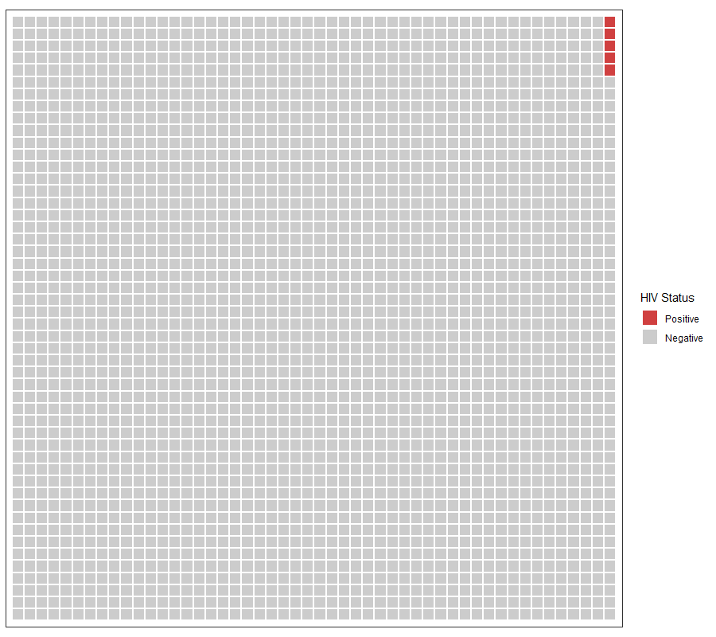
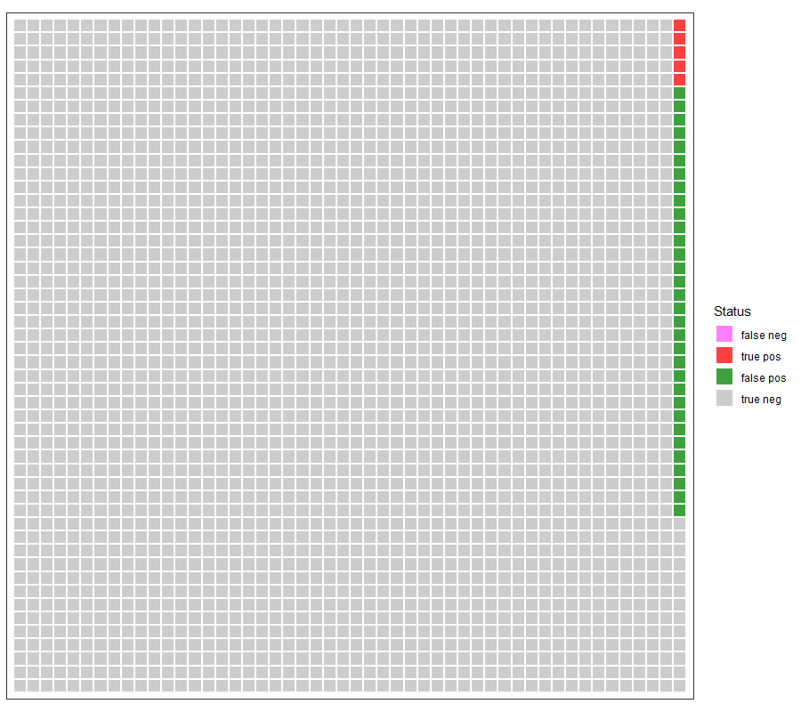
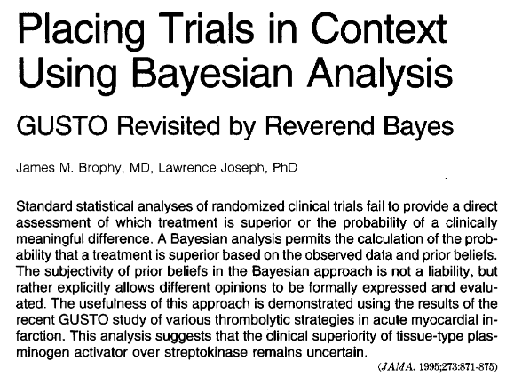
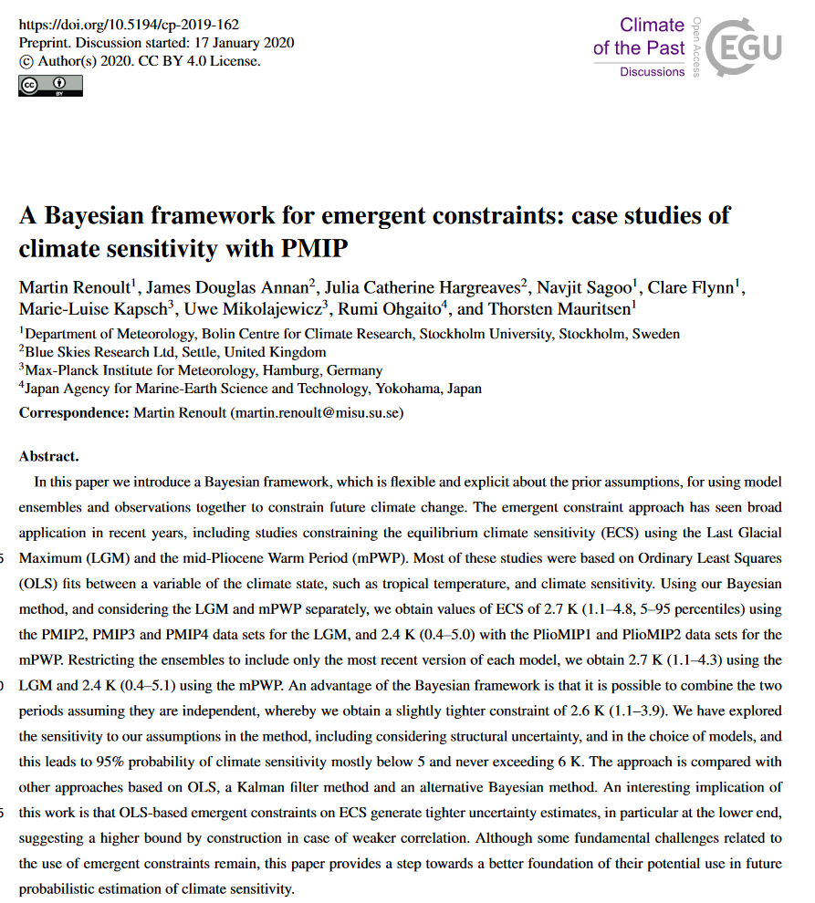
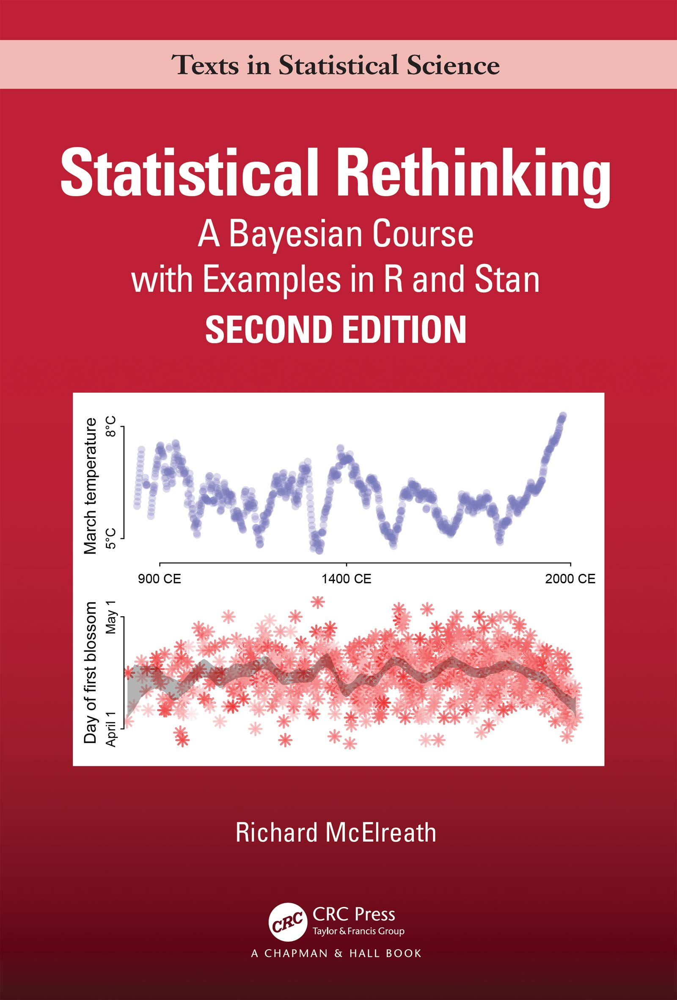
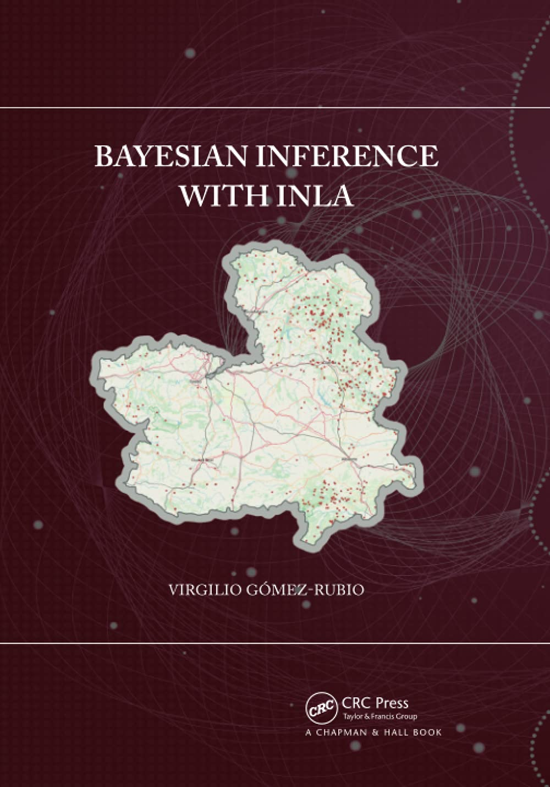
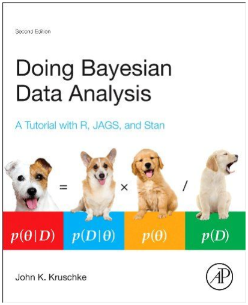
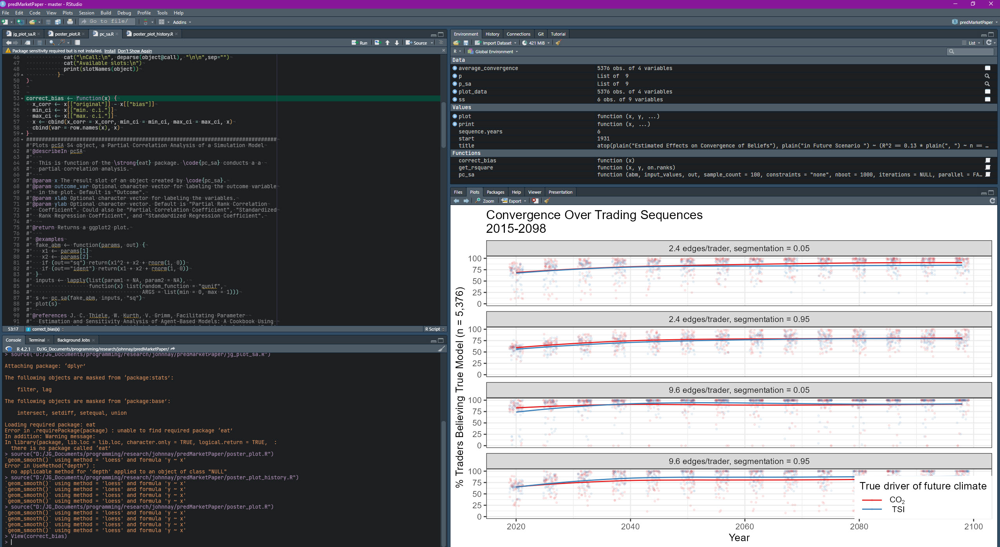

First Day of Class
EES 5891-03
Bayesian Statistical Methods
Jonathan Gilligan
Class #1: Thursday, August 25 2022
Introductions
- Introduce yourselves
- Name
- Department and research interests
- How long have you been in your program?
- What previous math and stats have you taken?
- Where are you from?
- Something interesting about yourself
What Is Statistics?
What Is Statistics?
- Define “statistics”
- What do you use statistics for?
- What kinds of questions do you expect statistics to answer?
What is Bayesian Statistics?
- Why are you taking this class?
- What do you know about Bayesian statistics?
- Any questions for me?
What is the probability the sun will rise tomorrow?
Disease testing
- Roughly 1 in 500 university students (0.2%) are infected with HIV
- Suppose a test has
- 99% sensitivity (if someone has HIV, there’s a 99% probability the test will correctly say “positive”)
- 98.5% specificity (if someone doesn’t have HIV, there’s a 98.5% probability the test will correctly say “negative”)
- If the test is positive, what is the probability the person really has HIV?
- If the test is negative, what is the probability the person doesn’t have HIV?
Disease testing:
- 2500 people
- Prevalence of HIV = 0.2%
- 5 people are HIV positive.
- Sensitivity: 99.0%
- Specificity: 98.5%

Disease testing:
- 2500 people
- Prevalence of HIV = 0.2%
- 5 people are HIV positive.
- Sensitivity: 99.0%
- 5 HIV-positive people test true positive
- 0 HIV-positive people test false negative
- Specificity: 98.5%
- 2463 HIV-negative people test true negative
- 32 HIV-negative people test false positive
- Of the 37 people who test positive, 5
(13.5%) actually have HIV and 32 (86.5%) don’t. - More exactly, if a university student tests positive, the probability they actually have HIV is 11.7%.
- If a student tests negative, the probability they don’t have HIV is 99.998%.

What does this mean?
- When you do a standard statistical significance test, and it tells you \(p = 0.01\), what does that mean?
- It means that if the null hypothesis were true, there
would be a 1% chance that you’d observe data at least this far away from
the exact null hypothesis.
- If you don’t have HIV, you have a 1.5% chance of getting a positive test.
- But what we usually want to know is not the probability seeing
the data we collected if the null hypothesis is true.
- We want to know the probabilty that the null hypothesis is true if we see the data we observed.
- That’s a different question.
- To answer it, we need to know the probability that the null hypothesis was true before we collected the data, and then calculate how much our data changes that probability by giving us more information.
Applications
- Mid-1990s, two drugs used to treat heart attacks:
- streptokinase (SK): widely used, inespensive.
- Tissue plasminogen activator (t-PA): new, expensive, poorly understood.
- GUSTO: big clinical trial with 30516 patients:
- 6.3% of patients treated with t-PA died
- 7.3% of patients treated with SK died.
- Statistical significance (t-PA better than SK) was \(p < 0.001\)
- But there had been two previous clinical trials with a total of 47,294 patients found no benefit to t-PA.
- Combine all three trials using Bayesian methods:
- If GUSTO was twice as credible as the other studies, 44% probability that t-PA was better.
- If the other studies were just as credible as GUSTO, 17% chance that t-PA was better.

Sensitivity of the Climate System
- Climate models predict global warming, but we only have a few
decades with which to test their accuracy
- CO2 hasn’t varied that much over this time span.
- Use Bayesian methods to combine paleoclimate data with current
models.
- More than 800,000 years of Pleistocene data
- Huge variations in CO2.
- More than 800,000 years of Pleistocene data
- Including paleoclimate data helps set an upper limit on how big climate sensitivity could be.

Organization of the Course
- The main class website is at https://ees5891.jgilligan.org
- Copies of the
- syllabus,
- reading assignments,
- homework assignments
- slides from class (also link from QR code on title slide)
- instructions for installing necessary software on your computer
- Links to helpful resources.
- Slides:
- The title slide has QR code with link to online version.
- PDF versions are also posted to course web site (link on title slide)
- Slides have two-dimensional navigation (in a browser, hit “?” for help)
Textbooks
|  |
Richard McElreath, Statistical Rethinking
(2nd Edition) Required |
|  |
Virhilio Gómez-Rubio, Bayeian Inference with INLA Required (Free web version online at https://becarioprecario.bitbucket.io/inla-gitbook/)
|
|  |
John K. Kruschke, Doing Bayesian Data Analysis Optional supplementary book, not required |

|
Hadley Wickham & Garrett Grolemund, R for Data
Science Recommended (Free web version online at https://r4ds.had.co.nz/)
|
Course Material
- Main source of material: ees5891.jgilligan.org
- Syllabus
- Reading assignments for the semester
- Do the assigned reading before class on the day it’s assigned for.
- Homework is due at the beginning of class on the assigned due date.
- Slides from class
- Web-based and PDF versions
- Posted on ees5891.jgilligan.org/schedule/
- Slides:
- The title slide has QR code with link to online version.
- PDF versions are also posted to course web site (link on title slide)
- Web-based slides have two-dimensional navigation (in a browser, hit “?” for help)
Computational Resources
R
- We will use the R for all the statistical analysis in this course
- It is free and open source
- It is widely used and powerful
- It is written specifically for statistical analysis
- There is an extensive library of free packages people have written to extend it.
- You can find instructions for installing R and the other software we will use this semester in the “Tools” page of the class web site and in the homework assignment for Tuesday.
RStudio
- We will use the RStudio integrated development environment for
working with R.
- RStudio combines an editor for writing code and an environment for running R scripts and also using R interactively, displaying graphics, etc.
- Like R, RStudio is free and open-source.

Additional R Resources
- We will also install a lot of packages other people have written to add powerful Bayesian data analysis to R.
- To use these, it will be necessary to install the R development environmment. There are links to detailed instructions in the homework assignment for Tuesday and on the “Tools” page of the class web site.
Application to Law and Justice
Weighing Evidence of Guilt
- In a city with 1 million people, someone committed a burglary.
- Police found a partial fingerprint at the crime scene
- A suspect was arrested and his fingerprints match the partial print at the scene
Fingerprint Examinations
- Sensitivity = 0.999
- If the suspect actually left the print, there is a 99.9% probability that the fingerprint experts will declare a match.
- Specificity = 0.99999
- If someone else left the print, there is only a 1 in 100,000 chance that the experts will declare a match (a false positive)
Prosecutor’s Fallacy
- Specificity = 99.999%. If someone else left the print, there is only a 1 in 100,000 chance that the experts would declare a match.
- Therefore, if experts declare a match, we can be 99.999% certain the suspect is guilty.
- This is not true.
Bayes’s Theorem
\[ P(H|DI) = \frac{P(D|HI) \times P(H|I)}{P(D|I)} \]
- H: Hypothesis, the suspect left the print
- h: Null hypothesis, someone else left the print
- D: New data, experts say the prints match
- d: New data, experts say the prints don’t match
- I: Other evidence we had before the fingerprint analysis.
- \(P(D|H,I)\) = sensitivity (99.9%)
- \(P(d|h,I)\) = specificity (99.999%)
\[ \begin{aligned} P(D|I) &= P(D|HI) \times P(H|I) + P(D|hI) \times P(h|I) \\ &= P(D|HI) \times P(H|I) + (1 - P(d|hI)) \times (1 - P(H|I)) \end{aligned} \]
Prior Probability
\[ P(H|DI) = \frac{P(D|HI) \times P(H|I)}{P(D|I)} \]
- \(P(D|H,I)\) = sensitivity (99.9%)
- \(P(d|h,I)\) = specificity (99.999%)
- \(P(D|I) = P(D|HI) \times P(H|I) + (1 - P(d|hI)) \times (1 - P(H|I))\)
- We need to know \(P(H|I)\), the probability, before we learn the fingerprint evidence, that the suspect left the fingerprint at the scene. (this is called the prior probability)
Different values of the prior
\[ P(H|DI) = \frac{P(D|HI) \times P(H|I)}{P(D|I)} \]
\(P(D|H,I)\) = sensitivity (99.9%)
\(P(d|h,I)\) = specificity (99.999%)
Suppose the prior \(P(H|I)\) is very small. The fingerprint is the only useful evidence we have.
There are 1 million people in the city, so \(P(H|I) = 1\times10^{=6}\)
\[ P(H|DI) = \frac{0.999 \times 1\times10^{-6}}{0.999 \times 1\times10^{-6} + (1 - 0.99999) \times (1 - 1\times 10^{-6})} = 0.091\]
- So there is a 9.1% probability that the suspect is guilty if the fingerprint matches.
Different values of the prior
\[ P(H|DI) = \frac{P(D|HI) \times P(H|I)}{P(D|I)} \]
\(P(D|H,I)\) = sensitivity (99.9%)
\(P(d|h,I)\) = specificity (99.999%)
Suppose the suspect was seen near the scene of the crime. This narrows it down so before we get the fingerprint evidence, we estimate that \(P(H|I)\) is 1 in 1000 (0.001).
\[ P(H|DI) = \frac{0.999 \times 0.001}{0.999 \times 0.001 + (1 - 0.99999) \times (1 - 0.001)} = 0.99\]
- So there is a 99% probability that the suspect is guilty if the fingerprint matches.